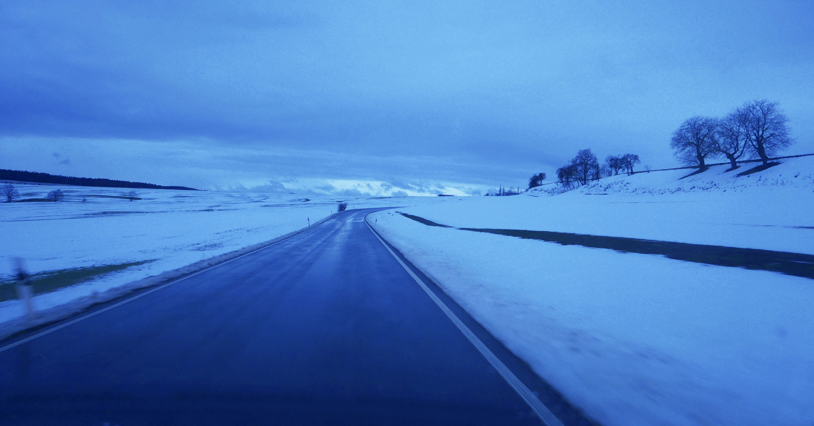

Kultur
10.01.2019 · Eckhard Gorontzi
Impulsreferat zum Thema Tourismus in M-V, gehalten von Eckhard Gorontzi beim Poetenfrühstück in Hohenbüssow am 09. 01. 2019

Tourismus ist nur ein Wort. Wofür brauchen wir das? So ein –ismus klingt immer eher unpersönlich, ich glaube heutzutage ist kaum jemand stolz darauf als Tourist bezeichnet zu werden, aber es gibt offensichtlich Leute in diesem Land, die systematisch Zielgruppen einkreisen, denen sie einzureden versuchen sich bei uns für Tourismus hergeben zu wollen. Die Sache wird nicht grundsätzlich besser, wenn wir sie in andere Worte kleiden. Auch der Begriff Fremdenverkehr bringt mich auf ziemlich dumme Gedanken. Zwischen Fremden und Einheimischen zu unterscheiden, womöglich noch im Zusammenhang mit Angebot und Nachfrage, darüber habe ich eigentlich keine Lust nachzudenken. Ich beginne lieber mit der seit Urzeiten bewährten Gastfreundschaft. Sie ist etwas so fundamental zivilisatorisch grundlegende Selbstverständliches, dermaßen allgemeingültig akzeptiert und anerkannt, daß sie nicht einmal im Grundgesetz erwähnt werden muss, und jetzt komme ich nebenbei wieder zu unserem eigentlichen Thema, indem ich die These aufstelle:
“Tourismus ist kommerzialisierte Gastfreundschaft“, weil was in unserer Verfassung nicht mit Geld geregelt und besteuert werden kann ist keine Wirtschaft, aber das ist es im Grunde ja auch was es tatsächlich für Tourismus braucht: Eine Wirtschaft. Das Thema Gastwirtschaft hier weiter zu vertiefen würde mir jetzt viel Spass machen, wer erinnert sich nicht gerne an lustige Abende in froher Runde, aber darum geht es hier jetzt nicht: es geht um Tourismus und das ist eine ernste Angelegenheit. Es geht nicht um Urlaub, darüber ist schon im Nibelungenlied genug gesungen worden und auch auf die Abenteuer des Odysseus möchte ich jetzt ausnahmsweise nicht zu sprechen kommen, ich beginne mein kulturhistorisches Gedankenspiel mit der Behauptung: „Ein Tourist ist jemand, der in diesem Moment lieber nicht zuhause ist,“ weil es ihm da vielleicht nicht gefällt, auch scheint er mir irgendwie auf der Flucht zu sein, wahrscheinlich vor sich selbst, und jetzt geht mir wieder dieses fantastische Wort durch den Kopf das ich in der „Landestourismus Konzeption M-V“ aufgelesen habe: „Destinationsmanagementorganisation“, ein semantischer tourismusfachsprachlicher Leckerbissen, gerne auch in Kombination mit „zukunftssicher aufgestellt“ aber in jedem Fall als „Voraussetzung für Innovation und Qualität.“ (S.26) Aber Spaß beiseite, in Mecklenburg-Vorpommern Ferien zu machen ist für alle Beteiligten eine echte Herausforderung. Früher einmal, als ich noch ein unerfahrener Wanderbursche war, habe ich immer gerne gesagt:
„Wer Urlaub braucht hat seinen Beruf verfehlt.“ Das stimmte seinerzeit für mich, denn warum sollte jemand seine Freizeit – auch ein Wort über das es nachzudenken bestimmt sehr kurzweilig wäre – also warum sollte jemand der nicht gerne zuhause ist seine Freizeit nach Mecklenburg-Vorpommern exportieren? Er bringt also sein sauer verdientes Geld und seine vermeintlich unschätzbar wertvolle Freizeit in eine Gegend, wo er dann sehr schnell merken kann, dass es zuhause eigentlich auch gar nicht so schlecht ist. Immerhin. Ein wichtiges Motiv für den Tourismus ist es ja auch, hinterher den anderen sagen zu können wo er gewesen ist, er kann dann Fotographien vorzeigen und etwas erzählen, egal ob es sein Gegenüber interessieren mag oder nicht. Ich zum Beispiel interessiere mich sehr für Augenzeugenberichte aus Pasewalk. Auch glaube ich, daß die Wahrheit über Grimmen und Gnoien noch immer nicht zutage gefördert wurde, aber ich muss leider wieder zu meinem eigentlichen Thema kommen:
Wirtschaftsförderung und Tourismus in Mecklenburg-Vorpommern. Wer von euch war schon mal in einem Spaßbad? Das ist etwas sehr typisches hier und der weiteste Weg lohnt sich. Surrogate tropischer Erlebniswelten, eiskalt servierte exotische Cocktails und das Badewasser ist so blau wie auf einer Postkarte aus Honolulu. Selbstverständlich braucht Mecklenburg-Vorpommern Tourismus, denn neben Ackerbau und Viehzucht und einer nicht enden wollenden Fortsetzungsgeschichte von Verwaltungsreformen und Gebietskörperschaftsanpassungsnovellen braucht es auch eine freie Marktwirtschaft, mit der Betonung auf frei, denn niemand würde auf die Idee kommen, Tourismus unter planwirtschaftlichen Prämissen zu propagieren. Aber warum eigentlich nicht? Schon Thomas Morus schrieb in seinem hochaktuellen Roman „Utopia“: Die menschliche Gesellschaft kann nur gesund bleiben und dauerhaft funktionieren, wenn Stadt- und Landbevölkerung alle 7 Jahre komplett gegeneinander ausgetauscht werden. Thomas Morus endete auf dem Scheiterhaufen. Vielleicht hätte er besser ein Tourismuskonzept geschrieben. Es gibt einfach nichts Neues unter der Sonne aber neuerdings unter Tage. Im Ruhrgebiet erholen sich jetzt Touristen in den Fabriken und Bergwerken wo früher einmal echte Malocher geschuftet haben. Abenteuer am Puls der Zeit.
Industrieromantik nennt man das. Leider gibt es in Mecklenburg-Vorpommern weder braune noch schwarze Kohle. Romantik gibt es angeblich auch auf Mittelalterfesten, aber das halte ich für sehr weit hergeholt. Auch gibt es hier keine Berge zu besteigen und Ferien auf dem Bauernhof kommen auch nicht in Frage, weil es hier nie Bauernhöfe gegeben hat. Und auf die Urlauberwelle der romantischen Schwärmer für die Agrarindustrie müssen wir noch zwei Generationen warten. Vielleicht wäre Zeitwanderung ein gutes Thema für Tourismus in M-V, oder doch besser Zuwanderung? Womit wir beim schönen Thema Mobilität und Migration angekommen sind, denn auch für Asyltourismus gäbe es ein interessantes unerforschtes Entwicklungspotential, bisher jedoch geschieht hier alles noch sehr konventionell mit der systematischen Vermarktung der Küstenlandschaft, also dem bewährten Konzept von Sandburgen am Strand, wobei die Ostseeküste gegenüber den Urlaubsparadiesen am Mittelmehr den unschätzbaren Vorteil genießt, dass hier keine ertrunkenen Flüchtlinge aus Afrika angeschwemmt werden. Letztlich muss ich zugeben, dass die neue Landestourismus Konzeption die Problematik realistisch sieht (S.41ff), indem sie auch die Lebenszufriedenheit und die Tourismusakzeptanz in der einheimischen Bevölkerung erhöhen will, denn nur durch eine offene Willkommensstruktur zur richtigen Zeit am richtigen Ort kann das analoge Urlaubsergebnis unserer Gäste verbessert werden, damit wir endlich verstehen, auf den uns zur Verfügung stehenden digitalen Kanälen nachhaltige Emotionen zu wecken.
Tourismus Gastfreundschaft Utopia Odysseus Willkommenskultur